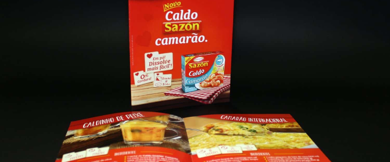
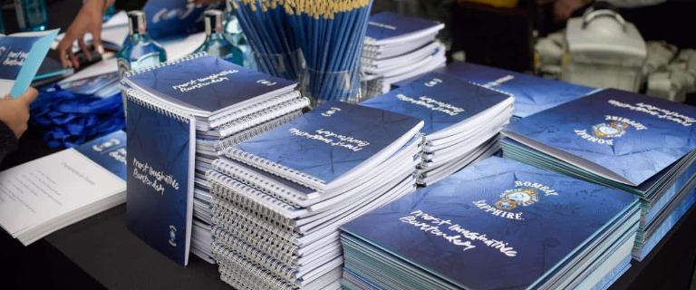

Serviços
Gráfica Rápida (Sistema Digital)
Quando a tiragem é pequena ou a prazo é curto, a solução é impressão digital. O sistema digital dispensas diversos processos, como fotolitos, chapas, acerto de máquina etc, tornando assim, o processo de impressão mais rápido e mais econômico para pequenas tiragens.
Sistema Offset / Convencional
O sistema off-set é indicado para médias e grandes tiragens, pois a produtividade/velocidade é alta e o custo de insumos menor, com isso consegue-se um custo unitário muito menor em relação ao sistema digital.
Comunicação Visual / Sign
Para serviços de sinalização, contamos com equipamentos de alta tecnologia. Banners, faixas, placas e muito mais, realizados com alta qualidade em prazo curtíssimos. Para pequenas e médias tiragens utilizamos o processo digital, para grandes tiragens o processo serigráfico.